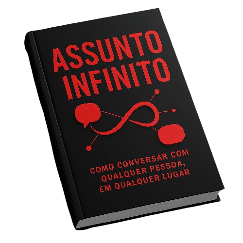

Eu vou te ensinar de uma vez por todas a ter sempre assunto com qualquer pessoa, e com qualquer mulher
Vou ser sincero, e não vou te ensinar nenhuma mágica, vou te ensinar apenas algumas técnicas 100% funcionais de comunicação que te faz ter assunto sempre
⬇ ⬇ ⬇
Se você é igual eu, então você sempre teve dificuldade em ter assunto com as pessoas, principalmente com as mulheres que você achava mais bonitas
Isso não precisa ser assim cara, e eu te digo com convicção porque eu era igual você!
Depois de muito vácuo eu cansei de aceitar essa situação, comecei a analisar as pessoas, e criei um método de 4 passos que me blindaram de não ter mais assunto
Funciona assim:
Passo 1: O interesse genuíno:
Poucas coisas atraem mais do que o interesse genuíno (já dizia Dale Carnegie em “Como fazer amigos e influenciar pessoas”), aqui vou falar sobre como se interessar por qualquer pessoa
Passo 2: Perguntas que Nunca Acabam:
Aqui vou te dar minha estratégia que te faz ter assuntos infinitos, você vai conseguir gerar perguntas pra qualquer resposta, então esquece aquele silêncio constrangedor que fica no ar de vez em quandoPasso 3: Histórias que Conectam:
Todos amam histórias, por isso livros vendem tanto! Você vai aprender a arte do Storytelling, a arte de transformar coisas simples que aconteceram em histórias que encantam!Passo 4: O Jogo do Improviso:
Aqui nem preciso dizer, vou te ensinar a improvisar de maneira geral - sim, improvisar é uma coisa “aprendível”!E pra garantir que vai ser 100% aplicavel pra você, eu fiz algo muito especial!
Vou te dar de bônus: Um Chat GPT treinado com a minha técnica, ele vai ser capaz de adaptar ela à sua vida e vai conseguir te dar exemplos práticos de como ter assunto conversando com qualquer pessoa!Você leu mas sentiu que não entendeu? Precisa de ainda mais exemplos? Ele vai te responder tudo o que você precisar!
Tenha sempre assunto
De R$ 67,00 por
R$ 27,00

+
- Protocolo: Assunto Infinito
- Mentor: Assunto infinito
- Acesso permanente ao protocolo
- Acesso permanente ao mentor
Acesso imediato • Recebimento via e-mail
Garantia de 30 dias
 Mudou de ideia? Sem problemas, sem perguntas. Simplesmente nos avise e vamos devolver seu dinheiro!
Mudou de ideia? Sem problemas, sem perguntas. Simplesmente nos avise e vamos devolver seu dinheiro!
Acesso imediato
Seu login e senha da plataforma de acesso serão enviados pro seu e-mail após o pagamento!pagamento seguro
Ambiente protegido por criptografia de web, seus dados são protegidos e seu pagamento é 100% seguro.Beleza mas quem sou eu?
Meu nome é Carlos, eu sou um cara comum que trabalha com T.I. Mas um problema bem comum na minha área é que as pessoas são bem introvertidas kk - então minhas referências sempre foram essas. Mas eu já estava de saco cheio, juntou que eu sempre travava com as mulheres e aí esse problema também começou a atrapalhar minha carreira, e eu cansei!
Li alguns livros sobre o assunto, como por exemplo “Como fazer amigos e influenciar pessoas”, ou “Como fazer alguém se apaixonar por você em 90 minutos”, “Manual de persuasão do FBI” dentre outros.
Inclusive usando alguns dos métodos que eu estruturei, já consegui ficar com quase 20 mulheres em uma única festa (e também vou te dar esse método como bônus)
Depois de ler esses livros e colocar o conhecimento em prática, eu consegui entender melhor essa parte da comunicação humana, e o que fiz foi resumir pra você.
Depois pode enviar um e-mail me agradecendo, viu?! 😉
Perguntas Frequentes
Esse método realmente funciona para qualquer pessoa, mesmo se eu for tímido ou nunca tive sucesso com mulheres?
Sim! O método foi desenvolvido justamente para quem sente dificuldade em criar conexão ou já tentou de tudo e não teve resultado. Ele é simples, prático e pode ser aplicado por qualquer pessoa, independentemente de experiência ou perfil.
Preciso ser bonito, rico ou ter muita conversa para aplicar o método?
Definitivamente não. O segredo está nos gatilhos psicológicos e na estrutura dos 4 passos que se complementam entre si, que funcionam independentemente de aparência, status ou habilidades sociais. O método foi criado para funcionar para qualquer um.
Em quanto tempo posso ver resultados?
Muitos leitores relatam mudanças já nas primeiras conversas após aplicar o método. Os resultados podem variar, mas a maioria percebe uma diferença significativa em pouco tempo, desde que coloque em prática o que está no protocolo.
O método é seguro? Não vou parecer forçado ou artificial?
O método foi testado e refinado para ser natural e autêntico. Você não vai precisar decorar frases prontas ou agir de forma estranha. Tudo é pensado para criar conexão genuína, sem forçar situações.
Preciso ter experiência prévia com mulheres?
Não. O método foi desenvolvido para funcionar independentemente do seu nível de experiência. Temos alunos que nunca tiveram uma namorada e conseguiram resultados impressionantes, assim como homens experientes que multiplicaram suas opções. O sistema é adaptável e inclui orientações específicas para diferentes níveis de habilidade social.
Isso envolve técnicas manipulativas ou desrespeitosas?
Absolutamente não. O Método do Assunto infinito é baseado em princípios éticos de comunicação autêntica e conexão genuína. Não ensinamos truques manipulativos, mas sim como desenvolver qualidades reais que naturalmente atraem mulheres. O objetivo é criar relacionamentos saudáveis baseados em atração mútua e compatibilidade verdadeira, não em jogos psicológicos ou manipulação.
Aprenda a nunca mais travar e sempre ter assunto
Acesso imediato • Garantia de 30 dias